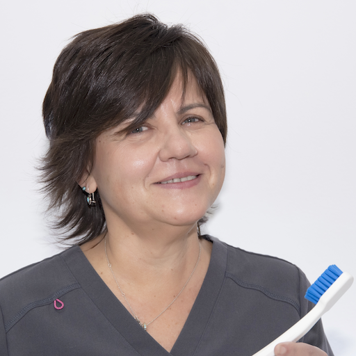
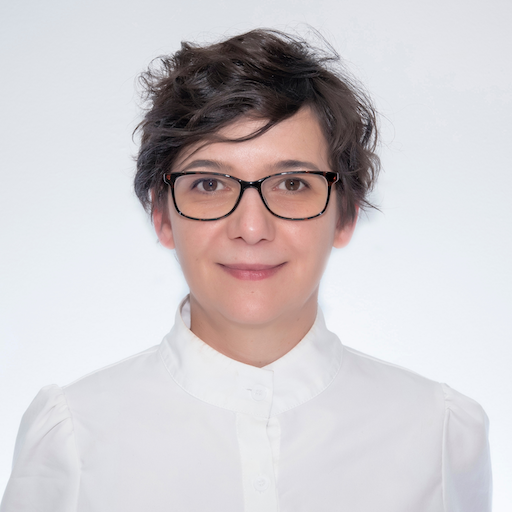
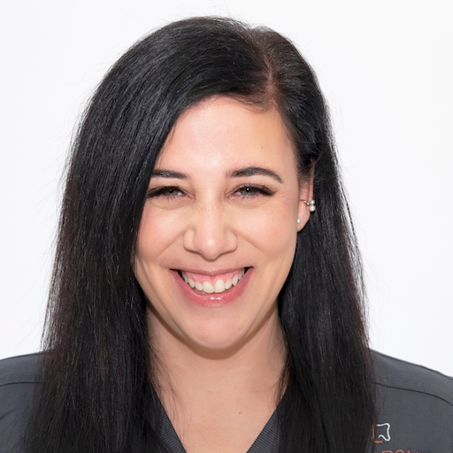
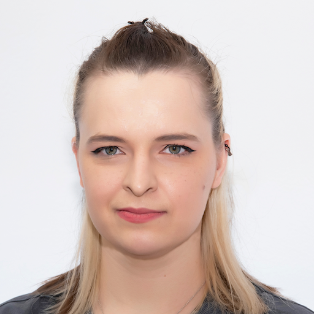
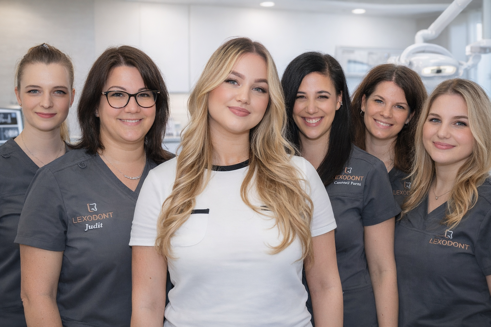

Dr. Kovács Petra
Minden hajnalban elmegyek futni, ha esik, ha fúj! Utána reggel fél órával hamarabb érkezem, hogy elkészítsem a kedvenc reggelim, zabkása, zabtej, zabszalonna!
Csapat landing
A főoldalról ide érkezik a látogató a részletes csapatbemutatóért, fotókkal és személyes érdekességekkel.

Minden hajnalban elmegyek futni, ha esik, ha fúj! Utána reggel fél órával hamarabb érkezem, hogy elkészítsem a kedvenc reggelim, zabkása, zabtej, zabszalonna!
Minden este végigsétálok a rakparton, ha hideg van, ha meleg! Utána másnap negyed órával korábban jövök, hogy megfőzzem a kedvenc kávémat, zabtejjel, mézzel, fahéjjal!
Minden hétvégén korán piacra indulok, ha fúj, ha süt a nap! Utána rendelés előtt időt hagyok, hogy elkészítsem a kedvenc reggelim, granola, joghurt, szezonális gyümölcs!

Minden reggel biciklivel jövök dolgozni, ha szél van, ha párás idő! Utána fél órával hamarabb beérek, hogy elkészítsem a kedvenc reggelim, tojás, pirítós, avokádókrém!
Minden pirkadatkor jógával indítok, ha csend van, ha zsong a város! Utána munkakezdés előtt időt hagyok, hogy elkészítsem a kedvenc reggelim, zabpalacsinta, banán, mogyoróvaj!
Minden hajnalban zenét hallgatok készülődés közben, ha álmos vagyok, ha tele energiával! Utána kicsivel korábban érkezem, hogy elkészítsem a kedvenc reggelim, omlett, zöldség, rozskenyér!
Minden reggel elolvasok néhány oldalt egy könyvből, ha nyugodt, ha rohanós nap vár! Utána hamarabb beérek, hogy elkészítsem a kedvenc reggelim, müzli, alma, fahéjas zabtej!
Minden korai órában nyújtással indítok, ha kint borús, ha tiszta az ég! Utána mindig előbb érkezem, hogy elkészítsem a kedvenc reggelim, teljes kiőrlésű szendvics, sajt, friss zöldség!

Minden hajnalban rövid meditációval kezdek, ha csendes, ha zajos a környék! Utána fél órával korábban érkezem, hogy elkészítsem a kedvenc reggelim, chia puding, bogyós gyümölcs, mandula!
Minden reggel gyors sétát teszek a parkban, ha szitál, ha ragyog a nap! Utána korábban beérek, hogy elkészítsem a kedvenc reggelim, zabkása, körte, pirított magvak!

Minden hajnalban rövid edzéssel aktiválom magam, ha fúj, ha süt a nap! Utána munkakezdés előtt beérek, hogy elkészítsem a kedvenc reggelim, natúr joghurt, granola, mézes dió!
Minden reggel kinyitom az ablakot és mély levegőt veszek, ha hűvös, ha meleg! Utána korábban érkezem, hogy elkészítsem a kedvenc reggelim, túrókrém, gyümölcs, zabkeksz!

Minden hajnalban időt szánok egy rövid naplóírásra, ha pörgős, ha nyugodt nap jön! Utána fél órával korábban beérek, hogy elkészítsem a kedvenc reggelim, tojásrántotta, paradicsom, teljes kiőrlésű kenyér!